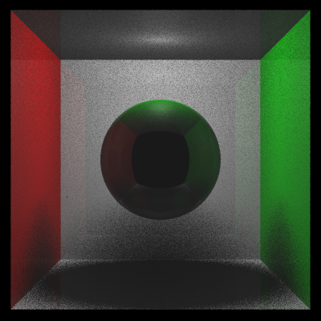
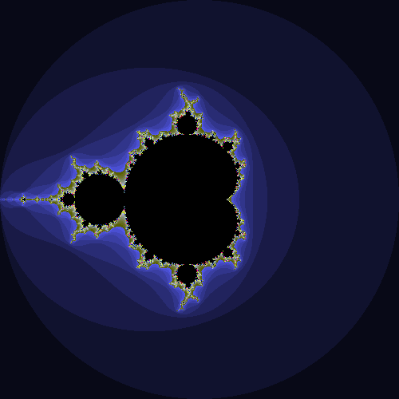

Personal Portfolio Website
Feb 2025 - Present
HTML, CSS
A responsive portfolio website to host my Computer Science and Visual Arts portfolios, with an adaptable layout supporting different screen sizes and orientations. It is written in HTML and CSS, hosted through GitHub pages. The design is inspired by early 20th century Bauhaus design principles.The source code is available on GitHub.

x86 Legacy Bootloader - Independent Study
March 2024 - Present
Intel x86, C
A custom MBR bootloader written in x86 assembly that loads a kernel file into memory from disk, sets up a Global Descriptor Table, and switches the CPU to 32-bit protected mode before transferring control. This is part of an independent study into low-level development using Intel's x86 Software Developer's Manual as a primary reference. Current work focuses on developing a minimimal operating system that can run and schedule programs.learn more about this project...
The project's Github repository is available here.

Raytracer
March 2025
C++, OpenGL
As part of my Computer Graphics courses, I implemented a CPU raytracer in C++ from scratch. The program reads in an input file of commands that sets up the scene data, then raytraces a scene based off of it. The code involves casting rays, anti-aliasing, detecting intersections with geometries in the scene, and calculating the new directions and lighting of rays along multiple bounces. Due to academic integrity policies, I am not permitted to publish the source code on GitHub, but you can click learn more to see a portfolio of images rendered by the raytracer.
Shaders and Computer Graphics
Jan 2025 - March 2025
C++, OpenGL, GLSL
I wrote shaders that calculate Phong shading (diffuse, ambient, and specular) in GLSL, as well as a Mandelbrot fragment shader that renders the mandelbrot fractal on a sqaure. I also wrote a matrix stack program in C++ using OpenGL that uses a tree structure to organize scene objects and geometries, then calculates model-view and perspective matrices along a traversal of that tree.
Human Powered Submarine Club - Electronics
Nov 2024 - Present
Arduino (C++), CAD
I joined UCSD's Human Powered Submarine club's electronic team. I impemented a sensor to measure and display the RPM of the sub's propellor using an arduino with a Hall effect sensor and a 3D-printed cuff containing magnets of alternating polarity. The hall effect sensor measures the magnetic strength of the magnet cuff as it's turning, and is able to detect each time a magnet passes by it. Using this, the arduino then calculates an RPM and sends that to an LCD screen which displays information on the sub's sensors. Because the Hall effect sensor needs a fast response time, I implemented a scheduler in the arduino that allows the RPM sensor to do a calculation using the whole CPU for a number of frames, then allows the other sensors to do their respective jobs for a number of frames, alternating. I also designed and 3D-printed a mount for the sensor using CAD.The files can be found at this Github repository, {LINK}

Blender Scripting - SVG File Generation
Nov 2024
Python Blender API, Processing 4 (java), JSON
I wrote scripts that take data from a 3D model in Blender and generate an SVG image of the model's triangles with numbered vertices. A laser cutter can use the SVG file to cut out and engrave thin triangles that can be assembled into a physical, to-scale sculpture of the original 3D model. I used it to laser cut a 3D model out of plywood, which I assembled together as the frame of a project for my sculpture studio.